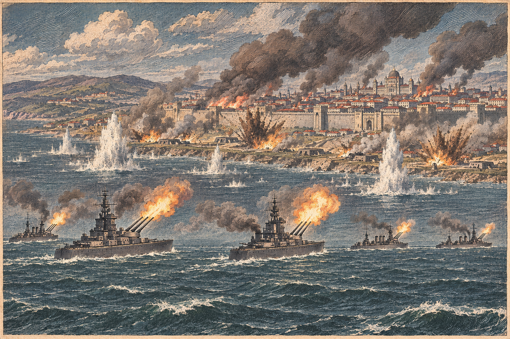

なのですの艦砲、紅峰の首都に届く
軍港は破壊、守備隊と街並みにも損害
五隻の艦が放った砲弾が首都ローテンホルンの部隊に七千八百人の損害を与え、四つの町と都市では人口が四千二百人減った 紅峰は停戦を打診した

【総合部】なのです主義人民共和国の艦隊が第178期、紅峰公国の首都ローテンホルンそのものを艦砲で撃った。前号まで首都の南の海岸にとどまっていた砲撃が、この期は首都に布陣した部隊と街区にまで届いた。戦艦二隻と巡洋艦三隻が放った砲弾は、首都にいた部隊に三千八百人、そのすぐ南の部隊に四千人、あわせて七千八百人の損害を与えた。南の部隊は全滅した。
損害は兵にとどまらない。砲弾は首都の人口を二万人から一万八千人に減らし、首都の隣の町で六百人、南西の町で六百人、南の現代都市で千人の人口を減らした。四か所の合計は四千二百人にのぼる。前号で伝えたとおり、紅峰は養殖場を取り払って軍港の通路を空け、造船に踏み切っていたが、その軍港は累計三発の命中で破壊された。ミサイル基地への命中も累計二発に達し、あと一発で壊れる。
公報に載る紅峰の今期の損害は四千六百人で、これは陸の戦いの分だけだ。艦砲の損害七千八百人はその一・七倍にあたり、公報の外側で積み上がっている。紅峰の人口は七万千七百人と、前期より六千四百人減った。兵力は七万九千六百人まで細り、働き手の不足は三万三千三百人に膨らんだ。詳報は3面。
紅峰、停戦を乞う
紅峰公国はこの期、なのですに停戦の意思を打診した。遊び方ページによれば、停戦は片方の打診だけでは成り立たず、相手が受け入れて初めて成立する。打診は四期で期限が切れる。なのですが応じるかどうかは、まだ見えない。艦砲が軍港を壊し、首都に届いた直後の打診は、造船で海の守りを固めようとした賭けが潰えたことを、紅峰自身が認めた形にも読める。
教団から五万三千人、オリョルッルへ
人の流れも動いた。狐っ娘の尻尾教団からオリョルッル王国へ、五万三千三百人が移り住んだ。教団の人口は三十七万六千百人から三十一万三千二百人へ、六万二千九百人、およそ一割七分も減った。受け入れたオリョルッルは百八十万六千七百人から百八十九万九千百人へ、九万二千四百人増えて盤面最大の国をさらに押し広げた。戦火の続く国を離れ、頂の国をめざす民の流れである。社会面の詳報は6面。